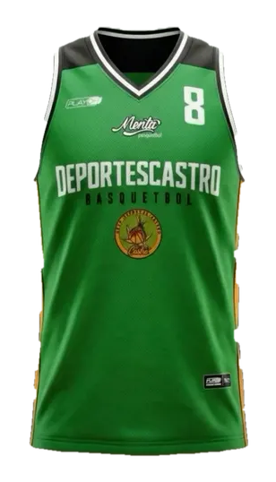

Fundación
El club se fundó el 12 de febrero. En 2004 jugó por primera vez en la Dimayor.
CLUB DEPORTES CASTRO
Básquetbol de Castro, Chiloé. Los Leones juegan de local en el Gimnasio Fiscal.
Historia del club
LIGA NACIONAL DE BÁSQUETBOL
El club se fundó el 12 de febrero. En 2004 jugó por primera vez en la Dimayor.
Castro ganó la Libsur al derrotar a Deportes Victoria en la final.
Boston College y Castro empataron a 85 en el cuarto partido de la final. En el alargue, Castro ganó 97 a 92 y se quedó con la Liga Nacional.
TEMPORADA 2026/27
Disponible en verde y en blanco. Los pedidos y las tallas se coordinan con el club por mensaje directo en Instagram.
Pedir por Instagram